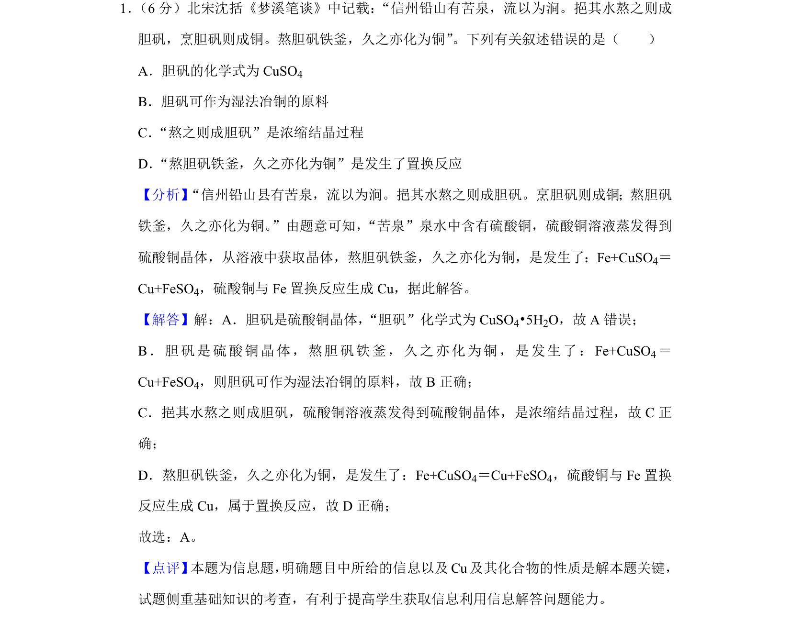
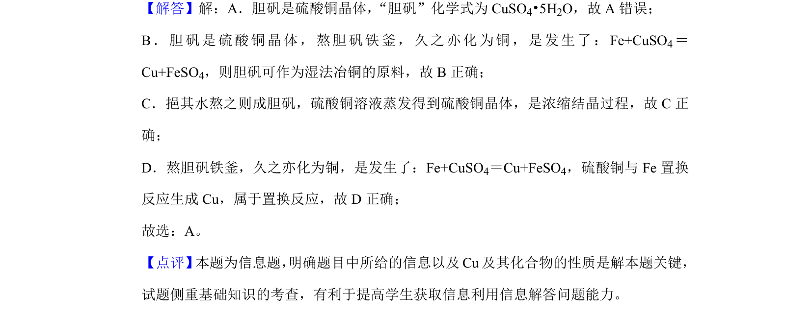

考点：胆矾化学式 湿法冶铜 结晶 置换反应

本题考查沈括《梦溪笔谈》中胆矾相关化学知识的判断。

📄 原 PDF 第 1 页：
素材/真题/吉林/2008-2024·（吉林）化学高考真题/2020年高考化学试卷（新课标Ⅱ）（解析卷）.pdf
1． （6分）北宋沈括《梦溪笔谈》中记载：“信州铅山有苦泉，流以为涧。挹其水熬之则成 胆矾，烹胆矾则成铜。熬胆矾铁釜，久之亦化为铜”。下列有关叙述错误的是（ ） A．胆矾的化学式为CuSO 4 B．胆矾可作为湿法冶铜的原料 C．“熬之则成胆矾”是浓缩结晶过程 D．“熬胆矾铁釜，久之亦化为铜”是发生了置换反应
【分析】“信州铅山县有苦泉，流以为涧。挹其水熬之则成胆矾。烹胆矾则成铜；熬胆矾 铁釜，久之亦化为铜。”由题意可知，“苦泉”泉水中含有硫酸铜，硫酸铜溶液蒸发得到 硫酸铜晶体，从溶液中获取晶体，熬胆矾铁釜，久之亦化为铜，是发生了：Fe+CuSO4＝ Cu+FeSO4，硫酸铜与Fe置换反应生成Cu，据此解答。 【解答】解：A．胆矾是硫酸铜晶体，“胆矾”化学式为CuSO4•5H2O，故A错误； B．胆矾是硫酸铜晶体，熬胆矾铁釜，久之亦化为铜，是发生了：Fe+CuSO 4＝ Cu+FeSO4，则胆矾可作为湿法冶铜的原料，故B正确； C．挹其水熬之则成胆矾，硫酸铜溶液蒸发得到硫酸铜晶体，是浓缩结晶过程，故C正 确； D．熬胆矾铁釜，久之亦化为铜，是发生了：Fe+CuSO 4＝Cu+FeSO4，硫酸铜与Fe置换 反应生成Cu，属于置换反应，故D正确； 故选：A。 【点评】 本题为信息题， 明确题目中所给的信息以及Cu及其化合物的性质是解本题关键， 试题侧重基础知识的考查，有利于提高学生获取信息利用信息解答问题能力。